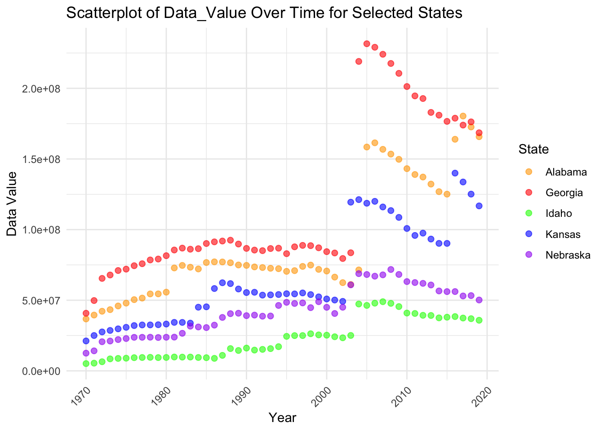
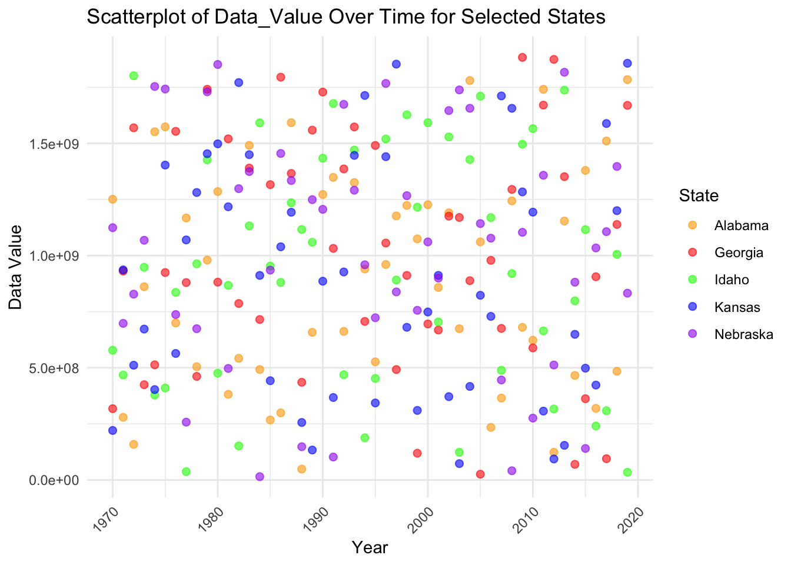

In this section we will acquire data from the directory, and have an initial look at it. This data on tax burden across different state was obtained from the annual compendium on tobacco revenue and industry statistics. These datasets are reported on an annual basis, and they include federal and state-level information regarding taxes applied to the price of a pack of cigarettes. The data was last updated on March 22, 2021.
We will now import the data from our repository using the here command. We can observe that there are 2550 observations with 14 variables. The variables some observations can be viewed using the head() command.
# Constructing the file path using here()file_path <-here("cdcdata-exercise","cigarette-tax.xlsx")# Importing the Excel file fromthe file pathcdc_dataset <-read_excel(file_path)# Viewing the uppermost data of the imported datasethead(cdc_dataset)
# A tibble: 6 × 14
LocationAbbr LocationDesc Year Datasource TopicDesc MeasureDesc Data_Value
<chr> <chr> <dbl> <chr> <chr> <chr> <dbl>
1 AL Alabama 2019 OW The Tax Bur… Cigarette … 165763113
2 AK Alaska 2019 OW The Tax Bur… Cigarette … 44773153
3 AZ Arizona 2019 OW The Tax Bur… Cigarette … 296712275
4 AR Arkansas 2019 OW The Tax Bur… Cigarette … 161909335
5 CA California 2019 OW The Tax Bur… Cigarette … 1791254942
6 CO Colorado 2019 OW The Tax Bur… Cigarette … 145551255
# ℹ 7 more variables: Data_Value_Unit <chr>, Data_Value_Type <chr>,
# GeoLocation <chr>, Source <chr>, TopicTypeId <chr>, TopicId <chr>,
# MeasureId <chr>
2 Data Cleaning
# Check for missing values within the cdc_datasetsummary(cdc_dataset)
LocationAbbr LocationDesc Year Datasource
Length:2550 Length:2550 Min. :1970 Length:2550
Class :character Class :character 1st Qu.:1982 Class :character
Mode :character Mode :character Median :1994 Mode :character
Mean :1994
3rd Qu.:2007
Max. :2019
TopicDesc MeasureDesc Data_Value Data_Value_Unit
Length:2550 Length:2550 Min. :2.737e+06 Length:2550
Class :character Class :character 1st Qu.:2.812e+07 Class :character
Mode :character Mode :character Median :7.708e+07 Mode :character
Mean :1.701e+08
3rd Qu.:2.004e+08
Max. :1.888e+09
Data_Value_Type GeoLocation Source TopicTypeId
Length:2550 Length:2550 Length:2550 Length:2550
Class :character Class :character Class :character Class :character
Mode :character Mode :character Mode :character Mode :character
TopicId MeasureId
Length:2550 Length:2550
Class :character Class :character
Mode :character Mode :character
We have one (continuous) numeric variable in out dataset under that name “Data_Value”. This variable actually represents the dollar amount of the revenue generated from cigarette sales. Another variable “Year” which represents the year of data collection has also been coded as numeric. The rest of the variables are coded as character as they have alphabets as values including the TopicID and MeasureId variables. The variable “LocationDesc” represents the name of the States.
2.1 Checking for missing values
# Check for missing values (NA) within the datasetmissing_values <-colSums(is.na(cdc_dataset))print(missing_values)
We can observe that there are 14 variables altogether and there are no missing values in the dataset. We will further check for any missing values coded as 9999 for any numeric variable. We will also use scatterplot to see if there is any such replacement for missing value which can be observed as an outlier. This can be observed later during the analysis.
2.2 Confirming the structure of the dataset through observation across States
# Counting the number of observations per Statestate_counts <- cdc_dataset %>%count(LocationDesc)# View the resultprint(state_counts)
# A tibble: 51 × 2
LocationDesc n
<chr> <int>
1 Alabama 50
2 Alaska 50
3 Arizona 50
4 Arkansas 50
5 California 50
6 Colorado 50
7 Connecticut 50
8 Delaware 50
9 District of Columbia 50
10 Florida 50
# ℹ 41 more rows
We can confirm that every state has 50 oservations for each State from year 1970-2019, which makes perfect sense.
#Preparing the dataset for replicable properties As the raw data itself is quite messy, we will try to make it as simple as possible to learn about their distribution. As this is a time-series data, we will focus on the “trend” rather than the distribution as normal. We will try to clean the data as much as possible so that we can observe consisteny in the result, making it easier to learn about the properties of the dataset.
2.3 Filtering out Five states to make the analysis easy.
We will filter five states from the dataset and make a new dataset based on these states, The next phases of analysis will include these states only: Georgia, Kansas, Idaho, Alabama and Nebraska.
# Filter dataset for selected statesfiltered_states <- cdc_dataset %>%filter(LocationDesc %in%c("Georgia", "Kansas", "Idaho", "Alabama", "Nebraska"))# View the first few rows of the new datasethead(filtered_states)
# A tibble: 6 × 14
LocationAbbr LocationDesc Year Datasource TopicDesc MeasureDesc Data_Value
<chr> <chr> <dbl> <chr> <chr> <chr> <dbl>
1 AL Alabama 2019 OW The Tax Bur… Cigarette … 165763113
2 GA Georgia 2019 OW The Tax Bur… Cigarette … 168549095
3 ID Idaho 2019 OW The Tax Bur… Cigarette … 35817868
4 KS Kansas 2019 OW The Tax Bur… Cigarette … 116778114
5 NE Nebraska 2019 OW The Tax Bur… Cigarette … 50168160
6 AL Alabama 2018 OW The Tax Bur… Cigarette … 172649066
# ℹ 7 more variables: Data_Value_Unit <chr>, Data_Value_Type <chr>,
# GeoLocation <chr>, Source <chr>, TopicTypeId <chr>, TopicId <chr>,
# MeasureId <chr>
2.4 Filtering out the variables of interest
In this section, we will filter out only five variables so that we can look through the dataset more easily. We will set the name to this dataset as “dataset”.
# Select only the required columnsdataset <- filtered_states %>%select(LocationDesc, LocationAbbr, Year, Data_Value, GeoLocation)# View the first few rows of the new datasethead(dataset)
# A tibble: 6 × 5
LocationDesc LocationAbbr Year Data_Value GeoLocation
<chr> <chr> <dbl> <dbl> <chr>
1 Alabama AL 2019 165763113 POINT (-86.631860762 32.840571122)
2 Georgia GA 2019 168549095 POINT (-83.627580346 32.839681093)
3 Idaho ID 2019 35817868 POINT (-114.363730042 43.682630005)
4 Kansas KS 2019 116778114 POINT (-98.200781227 38.3477403)
5 Nebraska NE 2019 50168160 POINT (-99.365720623 41.6410409880…
6 Alabama AL 2018 172649066 POINT (-86.631860762 32.840571122)
3 Visualizing the data
We will use multiple techniques to visualize and summarize the dataset so that it will be easy for other classmates to understand the structure behind the data..
3.1 Scatter plot of Revenue across time for our five states.
We will first use scatter plot to observe the property of our numeric variable Data_Value.
# Defining the custom colors for each state so it is easy for us to observecustom_colors <-c("Georgia"="red", "Kansas"="blue", "Idaho"="green", "Nebraska"="purple", "Alabama"="orange")# Scatterplot of Year vs Data_Valueggplot(dataset, aes(x = Year, y = Data_Value, color = LocationDesc)) +geom_point(alpha =0.6, size =2) +scale_color_manual(values = custom_colors) +theme_minimal() +labs(title ="Scatterplot of Data_Value Over Time for Selected States",x ="Year",y ="Data Value",color ="State") +theme(axis.text.x =element_text(angle =45, hjust =1))

As there is a sudden break in the pattern after the year 2000, we will remove these years from our dataset and create a new dataset based on years 1970-2000.
4 Further Cleaning of the dataset
We will create a new datset based on year 1970 to 2000 which because they show somewhat consistent trend among the data_valuei.e revenue value
# Filtering dataset for years less than 2001data <- dataset %>%filter(Year <2001)# Viewing the first few rows of the newly filtered datasethead(data)
# A tibble: 6 × 5
LocationDesc LocationAbbr Year Data_Value GeoLocation
<chr> <chr> <dbl> <dbl> <chr>
1 Alabama AL 2000 70664938 POINT (-86.631860762 32.840571122)
2 Georgia GA 2000 84389385 POINT (-83.627580346 32.839681093)
3 Idaho ID 2000 25249502 POINT (-114.363730042 43.682630005)
4 Kansas KS 2000 50886541 POINT (-98.200781227 38.3477403)
5 Nebraska NE 2000 44993900 POINT (-99.365720623 41.6410409880…
6 Alabama AL 1999 71844367 POINT (-86.631860762 32.840571122)
We can observe that we now have 155 observations with 5 variables.
# Counting the number of observations per state again.state_counts2 <- data %>%count(LocationDesc)# Viewing the count resultprint(state_counts2)
Here, we can observe we have 31 observations for each State across 1970-2000
5 Association of variables in final Dataset
This section will talk about the association of revenue within the five state across the year 1970-2000. We will use few figures and a regression analysis to get some idea of the relationship.
5.1 Scatter plot of Revenue across time for our five states.
ggplot(data, aes(x = Year, y = Data_Value, #setting the axescolor = LocationDesc)) +geom_point(alpha =0.6) +geom_smooth(method ="lm", se =FALSE) +# Adding a linear trend linetheme_minimal() +labs(title ="Trend of Revenue from Cigarette(in US$) Over Years by State",x ="Year",y ="Revenue Value",color ="State")
`geom_smooth()` using formula = 'y ~ x'
This figure clearly shows the relation between the variables across time and States. This relation will be more clear if we use gregression analysis to calculate the slope. We will do that in next step. The scatter plot also confirms that there is no such missing value as encoded as 9999 otherwise we would have seen it as an outlier in our scatterplots.
5.2 Calculating Slope or association through Regression
We will now try to express the relation of revenue over time for Georgia.
# Filtering data for Georgiageorgia_data <- dataset %>%filter(LocationDesc =="Georgia")# Running linear regression based on georgiageorgia_model <-lm(Data_Value ~ Year, data = georgia_data)# Viewing regression summary for goergiasummary(georgia_model)
Call:
lm(formula = Data_Value ~ Year, data = georgia_data)
Residuals:
Min 1Q Median 3Q Max
-62223438 -24447136 1385557 14666922 80405143
Coefficients:
Estimate Std. Error t value Pr(>|t|)
(Intercept) -6.130e+09 6.714e+08 -9.131 4.55e-12 ***
Year 3.133e+06 3.366e+05 9.308 2.51e-12 ***
---
Signif. codes: 0 '***' 0.001 '**' 0.01 '*' 0.05 '.' 0.1 ' ' 1
Residual standard error: 34350000 on 48 degrees of freedom
Multiple R-squared: 0.6435, Adjusted R-squared: 0.6361
F-statistic: 86.64 on 1 and 48 DF, p-value: 2.512e-12
Furthermore, we will also express the relation for Alabama.
# Filtering data for alabamaalabama_data <- dataset %>%filter(LocationDesc =="Alabama")# Runing linear regression for alabama datasetalabama_model <-lm(Data_Value ~ Year, data = alabama_data)# Viewing regression summary for alabama modelsummary(alabama_model)
Call:
lm(formula = Data_Value ~ Year, data = alabama_data)
Residuals:
Min 1Q Median 3Q Max
-50502109 -13652199 5184908 11116529 42297840
Coefficients:
Estimate Std. Error t value Pr(>|t|)
(Intercept) -4.878e+09 4.319e+08 -11.3 4.06e-15 ***
Year 2.491e+06 2.165e+05 11.5 2.12e-15 ***
---
Signif. codes: 0 '***' 0.001 '**' 0.01 '*' 0.05 '.' 0.1 ' ' 1
Residual standard error: 22100000 on 48 degrees of freedom
Multiple R-squared: 0.7339, Adjusted R-squared: 0.7283
F-statistic: 132.4 on 1 and 48 DF, p-value: 2.117e-15
From the two regression models above, the relation can be clearly observed and the properties of the datasets are clearly expressed.
5.3 Summary of Revenue across the five states of the final dataset
We will will now provide the full statistical summary of revenue based on the States present in our dataset including the mean, meadian, maximum and the minimums.
# Summarizing Data Value for five selected statessummary_data <- data %>%filter(LocationDesc %in%c("Georgia", "Kansas", "Idaho", "Alabama", "Nebraska")) %>%group_by(LocationDesc) %>%summarise(count =n(), # provides no. of observationmean =mean(Data_Value, na.rm =TRUE), # provides meanmedian =median(Data_Value, na.rm =TRUE), #provides meadianmin =min(Data_Value, na.rm =TRUE), # provides minimum valuemax =max(Data_Value, na.rm =TRUE), #provides max valuesd =sd(Data_Value, na.rm =TRUE) # provides standard deviation )# Viewing the summary resultprint(summary_data)
This table provides the overall summary of the final datset.
summary(data)
LocationDesc LocationAbbr Year Data_Value
Length:155 Length:155 Min. :1970 Min. : 5142000
Class :character Class :character 1st Qu.:1977 1st Qu.:24687170
Mode :character Mode :character Median :1985 Median :45327675
Mean :1985 Mean :47026928
3rd Qu.:1993 3rd Qu.:72472412
Max. :2000 Max. :92494239
GeoLocation
Length:155
Class :character
Mode :character
This section contributed by Mohammed Zuber
5.5 Load Required Libraries
# Load necessary libraries for data processing and visualizationlibrary(readxl) # For reading Excel fileslibrary(dplyr) # For data manipulationlibrary(ggplot2) # For visualization# Set seed for reproducibilityset.seed(42)
5.6 Load the Original Data
# Define the path to the dataset# Ensure the dataset is in the working directorydata_path <-"cigarette-tax.xlsx"# Read the dataset from the specified sheet in the Excel filedf <-read_excel(data_path, sheet ="cigarette-tax")# Display the first few rows to understand the dataset structurehead(df)
# A tibble: 6 × 14
LocationAbbr LocationDesc Year Datasource TopicDesc MeasureDesc Data_Value
<chr> <chr> <dbl> <chr> <chr> <chr> <dbl>
1 AL Alabama 2019 OW The Tax Bur… Cigarette … 165763113
2 AK Alaska 2019 OW The Tax Bur… Cigarette … 44773153
3 AZ Arizona 2019 OW The Tax Bur… Cigarette … 296712275
4 AR Arkansas 2019 OW The Tax Bur… Cigarette … 161909335
5 CA California 2019 OW The Tax Bur… Cigarette … 1791254942
6 CO Colorado 2019 OW The Tax Bur… Cigarette … 145551255
# ℹ 7 more variables: Data_Value_Unit <chr>, Data_Value_Type <chr>,
# GeoLocation <chr>, Source <chr>, TopicTypeId <chr>, TopicId <chr>,
# MeasureId <chr>
We will now import the data from our repository using the here command. We can observe that there are 2550 observations with 14 variables. The variables some observations can be viewed using the head() command.
5.7 Generate Synthetic Data- LLM AI tools were used to help write the code
# Copy the original dataset to preserve its structuresynthetic_df <- df# Generate synthetic values for the 'Data_Value' column# The values are randomly sampled within the original rangesynthetic_df$Data_Value <-sample(min(df$Data_Value, na.rm =TRUE):max(df$Data_Value, na.rm =TRUE), size =nrow(df), replace =TRUE)# Display the first few rows of the synthetic dataset to verify changeshead(synthetic_df)
# A tibble: 6 × 14
LocationAbbr LocationDesc Year Datasource TopicDesc MeasureDesc Data_Value
<chr> <chr> <dbl> <chr> <chr> <chr> <int>
1 AL Alabama 2019 OW The Tax Bur… Cigarette … 1784329036
2 AK Alaska 2019 OW The Tax Bur… Cigarette … 1231722496
3 AZ Arizona 2019 OW The Tax Bur… Cigarette … 611534923
4 AR Arkansas 2019 OW The Tax Bur… Cigarette … 1018881505
5 CA California 2019 OW The Tax Bur… Cigarette … 677017575
6 CO Colorado 2019 OW The Tax Bur… Cigarette … 1869612235
# ℹ 7 more variables: Data_Value_Unit <chr>, Data_Value_Type <chr>,
# GeoLocation <chr>, Source <chr>, TopicTypeId <chr>, TopicId <chr>,
# MeasureId <chr>
I created a synthetic dataset by copying the structure of the original dataset and replacing the Data_Value column with randomly sampled values within its original range. This ensures that the synthetic data maintains a similar distribution while removing any real-world patterns. While the minimum and maximum values are preserved, the randomness may not reflect trends or correlations present in the original data.
6 Data Cleaning for Synthetic Data
# Check for missing values and summary statisticssummary(synthetic_df)
LocationAbbr LocationDesc Year Datasource
Length:2550 Length:2550 Min. :1970 Length:2550
Class :character Class :character 1st Qu.:1982 Class :character
Mode :character Mode :character Median :1994 Mode :character
Mean :1994
3rd Qu.:2007
Max. :2019
TopicDesc MeasureDesc Data_Value Data_Value_Unit
Length:2550 Length:2550 Min. :2.811e+06 Length:2550
Class :character Class :character 1st Qu.:4.743e+08 Class :character
Mode :character Mode :character Median :9.411e+08 Mode :character
Mean :9.422e+08
3rd Qu.:1.411e+09
Max. :1.887e+09
Data_Value_Type GeoLocation Source TopicTypeId
Length:2550 Length:2550 Length:2550 Length:2550
Class :character Class :character Class :character Class :character
Mode :character Mode :character Mode :character Mode :character
TopicId MeasureId
Length:2550 Length:2550
Class :character Class :character
Mode :character Mode :character
# Display the structure of the synthetic datasetstr(synthetic_df)
To assess the quality of the synthetic dataset, I checked for missing values and generated summary statistics using the summary() function. This provides key metrics such as the minimum, maximum, median, and quartiles, allowing for a comparison with the original dataset. Additionally, the str() function was used to confirm the structure and data types of each column, ensuring consistency with the original dataset. This step helps verify that the synthetic data retains the expected format and completeness before further analysis.
# Check for missing values (NA) within the synthetic datasetmissing_values <-colSums(is.na(synthetic_df))# Print the number of missing values for each columnprint(missing_values)
To ensure data completeness, I checked for missing values in the synthetic dataset using colSums(is.na(synthetic_df)), which calculates the number of NA values in each column. ## Confirming the Structure of the Dataset Across States
# Counting the number of observations per Statestate_counts <- synthetic_df %>%count(LocationDesc)# View the resultprint(state_counts)
# A tibble: 51 × 2
LocationDesc n
<chr> <int>
1 Alabama 50
2 Alaska 50
3 Arizona 50
4 Arkansas 50
5 California 50
6 Colorado 50
7 Connecticut 50
8 Delaware 50
9 District of Columbia 50
10 Florida 50
# ℹ 41 more rows
To assess the distribution of observations across states in the synthetic dataset, I utilized the count() function from the dplyr package. This function tallies the number of occurrences for each unique value in the specified column, in this case, LocationDesc. By executing synthetic_df %>% count(LocationDesc), I obtained a summary of how many records pertain to each state. ## Filtering Five States for Further Analysis
# Filter dataset for selected statesfiltered_states <- synthetic_df %>%filter(LocationDesc %in%c("Georgia", "Kansas", "Idaho", "Alabama", "Nebraska"))# View the first few rows of the new datasethead(filtered_states)
# A tibble: 6 × 14
LocationAbbr LocationDesc Year Datasource TopicDesc MeasureDesc Data_Value
<chr> <chr> <dbl> <chr> <chr> <chr> <int>
1 AL Alabama 2019 OW The Tax Bur… Cigarette … 1784329036
2 GA Georgia 2019 OW The Tax Bur… Cigarette … 1669690063
3 ID Idaho 2019 OW The Tax Bur… Cigarette … 34207889
4 KS Kansas 2019 OW The Tax Bur… Cigarette … 1857140875
5 NE Nebraska 2019 OW The Tax Bur… Cigarette … 832504060
6 AL Alabama 2018 OW The Tax Bur… Cigarette … 484349853
# ℹ 7 more variables: Data_Value_Unit <chr>, Data_Value_Type <chr>,
# GeoLocation <chr>, Source <chr>, TopicTypeId <chr>, TopicId <chr>,
# MeasureId <chr>
To streamline the analysis, I filtered the dataset to include only five selected states: Georgia, Kansas, Idaho, Alabama, and Nebraska. This was done using the filter() function from dplyr, which extracts rows where the LocationDesc column matches one of the specified states. ## Selecting Relevant Variables
# Select only the required columnsdataset <- filtered_states %>%select(LocationDesc, LocationAbbr, Year, Data_Value, GeoLocation)# View the first few rows of the new datasethead(dataset)
# A tibble: 6 × 5
LocationDesc LocationAbbr Year Data_Value GeoLocation
<chr> <chr> <dbl> <int> <chr>
1 Alabama AL 2019 1784329036 POINT (-86.631860762 32.840571122)
2 Georgia GA 2019 1669690063 POINT (-83.627580346 32.839681093)
3 Idaho ID 2019 34207889 POINT (-114.363730042 43.682630005)
4 Kansas KS 2019 1857140875 POINT (-98.200781227 38.3477403)
5 Nebraska NE 2019 832504060 POINT (-99.365720623 41.6410409880…
6 Alabama AL 2018 484349853 POINT (-86.631860762 32.840571122)
To focus on key information, I selected only the most relevant variables from the filtered dataset using the select() function from dplyr. The chosen columns—LocationDesc (state name), LocationAbbr (state abbreviation), Year, Data_Value (cigarette sales/revenue), and GeoLocation (state coordinates)—are essential for analyzing trends over time.
6.1 Scatter Plot of Revenue Across Time for Selected States
# Define custom colors for each statecustom_colors <-c("Georgia"="red", "Kansas"="blue", "Idaho"="green", "Nebraska"="purple", "Alabama"="orange")# Scatterplot of Year vs Data_Valueggplot(dataset, aes(x = Year, y = Data_Value, color = LocationDesc)) +geom_point(alpha =0.6, size =2) +scale_color_manual(values = custom_colors) +theme_minimal() +labs(title ="Scatterplot of Data_Value Over Time for Selected States",x ="Year",y ="Data Value",color ="State") +theme(axis.text.x =element_text(angle =45, hjust =1))

The key difference between my scatter plot and my classmate’s is that mine appears randomly distributed, while theirs shows a clear trend over time, with values increasing before 2000 and declining afterward. This is because I generated my synthetic data using random sampling, which removed any underlying structure present in the original dataset. My classmate’s data retains a progressive pattern, suggesting that Data_Value follows a time-dependent trend. ## Further Cleaning: Filtering Data for 1970-2000
# Filtering dataset for years less than 2001data <- dataset %>%filter(Year <2001)# Viewing the first few rows of the newly filtered datasethead(data)
# A tibble: 6 × 5
LocationDesc LocationAbbr Year Data_Value GeoLocation
<chr> <chr> <dbl> <int> <chr>
1 Alabama AL 2000 1226607262 POINT (-86.631860762 32.840571122)
2 Georgia GA 2000 695213645 POINT (-83.627580346 32.839681093)
3 Idaho ID 2000 1592713712 POINT (-114.363730042 43.682630005)
4 Kansas KS 2000 748675169 POINT (-98.200781227 38.3477403)
5 Nebraska NE 2000 1061013837 POINT (-99.365720623 41.6410409880…
6 Alabama AL 1999 1074575607 POINT (-86.631860762 32.840571122)
To focus on historical trends, I filtered the dataset to include only records from years before 2001 using the filter() function. This step ensures that the analysis captures a consistent time period, especially if later years exhibit different trends or irregularities. By restricting the data to 1970-2000, I aim to observe stable patterns without the potential disruptions seen in later years.
6.2 Confirming Observations Per State
# Counting the number of observations per state again.state_counts2 <- data %>%count(LocationDesc)# Viewing the count resultprint(state_counts2)
To verify the distribution of observations across states after filtering, I used the count() function again to tally the number of records per state in the refined dataset. This step ensures that all selected states (Georgia, Kansas, Idaho, Alabama, and Nebraska) maintain a balanced representation after restricting the data to years before 2001.
6.3 Association of Variables: Scatter Plot with Trend Line
ggplot(data, aes(x = Year, y = Data_Value, color = LocationDesc)) +geom_point(alpha =0.6) +geom_smooth(method ="lm", se =FALSE) +# Adding a linear trend linetheme_minimal() +labs(title ="Trend of Revenue from Cigarette(in US$) Over Years by State",x ="Year",y ="Revenue Value",color ="State")
`geom_smooth()` using formula = 'y ~ x'
The key difference between my plot and my classmate’s is that my trend lines appear flatter, while theirs show a clear upward trajectory over time. This is because my synthetic Data_Value was generated randomly, removing any inherent growth patterns present in the original dataset. My classmate’s plot maintains a structured increase, indicating that revenue values naturally rise over time rather than fluctuating randomly.
6.4 Regression Analysis: Relationship Over Time
# Filtering data for Georgiageorgia_data <- dataset %>%filter(LocationDesc =="Georgia")# Running linear regression based on Georgiageorgia_model <-lm(Data_Value ~ Year, data = georgia_data)# Viewing regression summary for Georgiasummary(georgia_model)
Call:
lm(formula = Data_Value ~ Year, data = georgia_data)
Residuals:
Min 1Q Median 3Q Max
-974428520 -333610875 -49039365 449037525 889230815
Coefficients:
Estimate Std. Error t value Pr(>|t|)
(Intercept) 3.899e+09 1.026e+10 0.380 0.705
Year -1.446e+06 5.142e+06 -0.281 0.780
Residual standard error: 524700000 on 48 degrees of freedom
Multiple R-squared: 0.001644, Adjusted R-squared: -0.01915
F-statistic: 0.07906 on 1 and 48 DF, p-value: 0.7798
The dataset maintains the original structure, with each selected state having 50 observations, ensuring consistency. However, the regression analysis for Georgia shows a very low R-squared value (0.00164) and a high p-value (0.7798), indicating no clear trend over time. This suggests that the synthetic Data_Value was randomly assigned and does not reflect a structured increase or decrease.
# Filtering data for Alabamaalabama_data <- dataset %>%filter(LocationDesc =="Alabama")# Running linear regression for Alabama datasetalabama_model <-lm(Data_Value ~ Year, data = alabama_data)# Viewing regression summary for Alabama modelsummary(alabama_model)
Call:
lm(formula = Data_Value ~ Year, data = alabama_data)
Residuals:
Min 1Q Median 3Q Max
-842238895 -386165861 38772300 400649003 842216045
Coefficients:
Estimate Std. Error t value Pr(>|t|)
(Intercept) -4.996e+09 9.614e+09 -0.520 0.606
Year 2.961e+06 4.820e+06 0.614 0.542
Residual standard error: 491900000 on 48 degrees of freedom
Multiple R-squared: 0.0078, Adjusted R-squared: -0.01287
F-statistic: 0.3773 on 1 and 48 DF, p-value: 0.5419
The regression analysis for Alabama shows a low R-squared value (0.0078) and a high p-value (0.5419), indicating that Year does not significantly explain the variation in Data_Value. The near-zero R-squared suggests that the synthetic revenue values do not follow a clear increasing or decreasing trend over time. This likely results from the random assignment of Data_Value, which does not capture the expected real-world growth or decline. ## Summary Statistics of Revenue for Selected States
# Summarizing Data Value for five selected statessummary_data <- data %>%group_by(LocationDesc) %>%summarise(count =n(), mean =mean(Data_Value, na.rm =TRUE), median =median(Data_Value, na.rm =TRUE), min =min(Data_Value, na.rm =TRUE), max =max(Data_Value, na.rm =TRUE), sd =sd(Data_Value, na.rm =TRUE) )# Viewing the summary resultprint(summary_data)
The summary statistics for the five selected states indicate that each state has 31 observations, maintaining a balanced dataset. However, the mean and median values show high variability, suggesting inconsistencies in how Data_Value was generated. The wide range between min and max values and high standard deviation indicate that the synthetic data may still be too random rather than following a structured trend. ## Final Summary of the Dataset
summary(data)
LocationDesc LocationAbbr Year Data_Value
Length:155 Length:155 Min. :1970 Min. :1.483e+07
Class :character Class :character 1st Qu.:1977 1st Qu.:5.343e+08
Mode :character Mode :character Median :1985 Median :9.591e+08
Mean :1985 Mean :9.775e+08
3rd Qu.:1993 3rd Qu.:1.388e+09
Max. :2000 Max. :1.853e+09
GeoLocation
Length:155
Class :character
Mode :character
From the outputs, my synthetic dataset maintains the correct structure with selected variables such as LocationDesc, Year, and Data_Value, ensuring consistency. However, the regression analysis for Georgia and Alabama shows very low R-squared values (0.0016 and 0.0078, respectively) and high p-values (0.7798 and 0.5419), indicating no significant relationship between Year and Data_Value. Additionally, while the mean and median values for each state appear reasonable, the wide range and high standard deviation suggest excessive randomness in Data_Value generation.